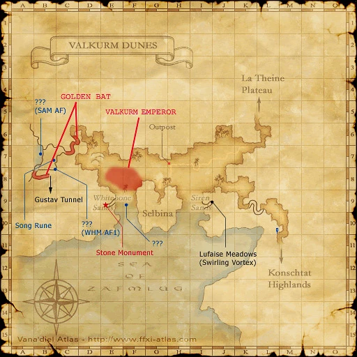
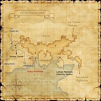

Description
Valkurm Dunes is an outdoor area in Zulkheim.
Map

Involved in Quests / Missions
| Quest / Mission | Type | Starter | Location |
|---|---|---|---|
| An Empty Vessel | Job (BLU) | Waoud | Aht Urhgan Whitegate (J-10) |
| An Explorer's Footsteps | Map | Abelard | Selbina (H-9) |
| Bite the Dust | General | Yazan | Port Bastok (H-6) |
| Valkurm Dunes/Expeditionary Force | Expeditionary Force | --- | --- (---) |
| Valkurm Dunes/Garrison | Garrison | --- | --- (---) |
| Messenger from Beyond | AF (WHM) | Narcheral | Northern San d'Oria (M-6) |
| Pirate's Chart Quest | Side Quest | Zaldon | Selbina (H-9) |
| Stardust | General | Baldric | Metalworks (G-9) |
| Path of the Bard | Job (BRD) | Mertaire | Lower Jeuno (I-8) |
| Yomi Okuri | AF (SAM) | Gilgamesh | Norg (L-8) |
NPCs
- Fighting Ant, I.M.
- Medicine Axe
- Tsunashige, I.M.
Notorious Monsters
| Name | Level | Drops | Steal | Family | Spawns | Notes |
|---|---|---|---|---|---|---|
| Golden Bat | 26-27 | Bat Wing Bat Fang Night Cape | — |  Giant BatsImage source Giant BatsImage source | — | Lottery Spawn |
| Valkurm Emperor | 29-30 | Emperor Hairpin Insect Wing | — |  FliesImage source FliesImage source | — | Lottery Spawn; Horizon-specific variant |
Regular Monsters


Event Monsters
| Name | Level | Drops | Steal | Family | Spawns | Notes |
|---|---|---|---|---|---|---|
| Doman | 52 | — | — |  ShadowsImage source ShadowsImage source | — | Spawned Quest: Yomi Okuri |
| Marchelute | 50-53 | — | — | ShadowsImage source | — | Spawned Quest: Messenger from Beyond |
| Onryo | 52 | — | — |  GhostsImage source GhostsImage source | — | Spawned Quest: Yomi Okuri |
EXP camps
Arrival and hazards
Arrive at the native Valkurm outpost teleport point after the Travel and Quest Clarity update. Walk to the nearby Field Manual and select the listed page; watch for goblin links.
Zenith NPCs
Zenith Scout handles active equipment-quest field steps. Zenith Atlas handles camp travel. They are placed near the outpost staging point in the prepared placement packages.
Scout location guide
Zenith Scout: current placement package, marked maps and source evidence. Scout By Books v1.0 places the Valkurm Scout beside Field Manual and Survival Guide at H-7 after installation and restart. Qufim remains at the F-6 staging area.
References
External references describe their own server or retail rules. Documented Zenith changes take precedence.
Map credits: Map 1 — HorizonXI Wiki. Original game maps © SQUARE ENIX; redrawn maps retain the credited authorship and license.

Supplemental NPC names and exits are from the base-world snapshot; expansion conditions can affect availability.
Additional level-75 reference


This enormous expanse of dunes can be found along the Bhefhel Gulf. While a majority of the surrounding coastline is too shallow for larger sea vessels, one natural harbor does exist. Near this harbor lies the independent port town of Selbina.
Connecting Areas
- Konschtat Highlands at (M-11)
- Gustav Tunnel at (B-8)
- Lufaise Meadows at (I-9)
- Selbina at (G-9)
- La Theine Plateau at (L-5)
Involved in Quests/Missions
|
Quest |
Type |
Starter |
Location |
| An Explorer's Footsteps | Map | Abelard | Selbina (H-9) |
| Bite the Dust | General | Yazan | Port Bastok (H-6) |
| EF: Valkurm Dunes | Expeditionary Force | --- | --- |
| Garrison/Valkurm Dunes | Garrison | --- | --- |
| Messenger from Beyond | AF (WHM) | Narcheral | Northern San d'Oria (M-6) |
| Pirate's Chart (Quest) | General | Zaldon | Selbina (H-9) |
| Stardust | General | Baldric | Metalworks (G-9) |
| The Path of the Bard | Job (BRD) | Mertaire | Lower Jeuno (I-8) |
| Yomi Okuri | AF (SAM) | Gilgamesh | Norg (L-8) |
| An Empty Vessel only if requested item is, Valkurm Sunsand | Job (BLU) | Waoud | Aht Urhgan Whitegate J-10 |
Fishing
|
|
Notorious Monsters Found Here
|
Name |
Level |
Drops |
Steal |
Family |
Spawns |
Notes | |||||||
| Doman | 52 - 52 | Shadow | |||||||||||
| Golden Bat | 26 - 27 | Giant Bat | |||||||||||
| Marchelute | 41 - 41 | Shadow | |||||||||||
| Onryo | 52 - 52 | Ghost | |||||||||||
| Valkurm Emperor | 29 - 30 | Fly | |||||||||||
|
HP = Detects Low HP; M = Detects Magic; Sc = Follows by Scent; T(S) = True-sight; T(H) = True-hearing JA = Detects job abilities; WS = Detects weaponskills; Z(D) = Asleep in Daytime; Z(N) = Asleep at Nighttime | |||||||||||||
 |
Mobs Found Here
|
Name |
Level |
Drops |
Steal |
Family |
Spawns |
Notes | |||||||
| Beach Pugil | 23 - 26 | Pugil | 12 | H A,H (When fishing) | |||||||||
| Bogy | 28 - 30 | Ghost | 9 | A,H | |||||||||
| Brutal Sheep | 20 - 23 | Sheep | |||||||||||
| Cutter | 28 - 30 | Crab | Spawned by fishing. | A,H | |||||||||
| Damselfly | 20 - 23 | Fly | 53 | L,H | |||||||||
| Earth Elemental | 28 - 30 | Elemental | 3 | M | |||||||||
| Fire Elemental | 28 - 30 | Elemental | 8 | M | |||||||||
| Ghoul | 18 - 24 | Skeleton | 18 | A,H | |||||||||
| Giant Bat | 20 - 22 | Giant Bat | 4 | A,H | |||||||||
| Goblin Ambusher | 17 - 20 | Goblin | 12 | A,L,S | |||||||||
| Goblin Bounty Hunter | 17-22 | Goblin | 8 | A,L,S | |||||||||
| Goblin Butcher | 17 - 20 | Goblin | 10 | A,L,S | |||||||||
| Goblin Digger | 19 - 21 | Goblin | 1 | A,L,S | |||||||||
| Goblin Gambler | 22 - 25 | Goblin | 20 | A,L,S | |||||||||
| Goblin Leecher | 22 - 25 | Goblin | 21 | A,L,S | |||||||||
| Goblin Mugger | 22 - 25 | Goblin | 20 | A,L,S | |||||||||
| Goblin Tinkerer | 17 - 20 | Goblin | 8 | A,L,S | |||||||||
| Hill Lizard | 15 - 19 | Lizard | 42 | L,H | |||||||||
| Night Bats | 12 - 15 | Bat Trio | 12 | H | |||||||||
| Puffer Pugil | 15 - 17 | Pugil | Spawned by fishing. | A,H | |||||||||
| Sand Bats | 12 - 15 | Bat Trio | 7 | A,H | |||||||||
| Sand Hare | 15 - 18 | Rabbit | 51 | L,S,Sc | |||||||||
| Snipper | 18 - 22 | Crab | 49 | H | |||||||||
| Stag Crab | 15 - 17 | Crab | Spawned by fishing. | A,H | |||||||||
| Star Bat | 17 - 20 | Giant Bat | 5
Only spawns at night. |
H | |||||||||
| Thread Leech | 21 - 25 | Leech | 29 | L,H,Sc | |||||||||
| Will-o'-the-Wisp | 25 - 27 | Bombs | 7
Spawns During: Fog |
A,S,M | |||||||||
|
HP = Detects Low HP; M = Detects Magic; Sc = Follows by Scent; T(S) = True-sight; T(H) = True-hearing JA = Detects job abilities; WS = Detects weaponskills; Z(D) = Asleep in Daytime; Z(N) = Asleep at Nighttime | |||||||||||||
Adapted from Eden Wiki: Valkurm Dunes · Contributors and history · CC BY-SA 4.0. Revision 46815. Layout, links and optional background text adapted for Zenith.